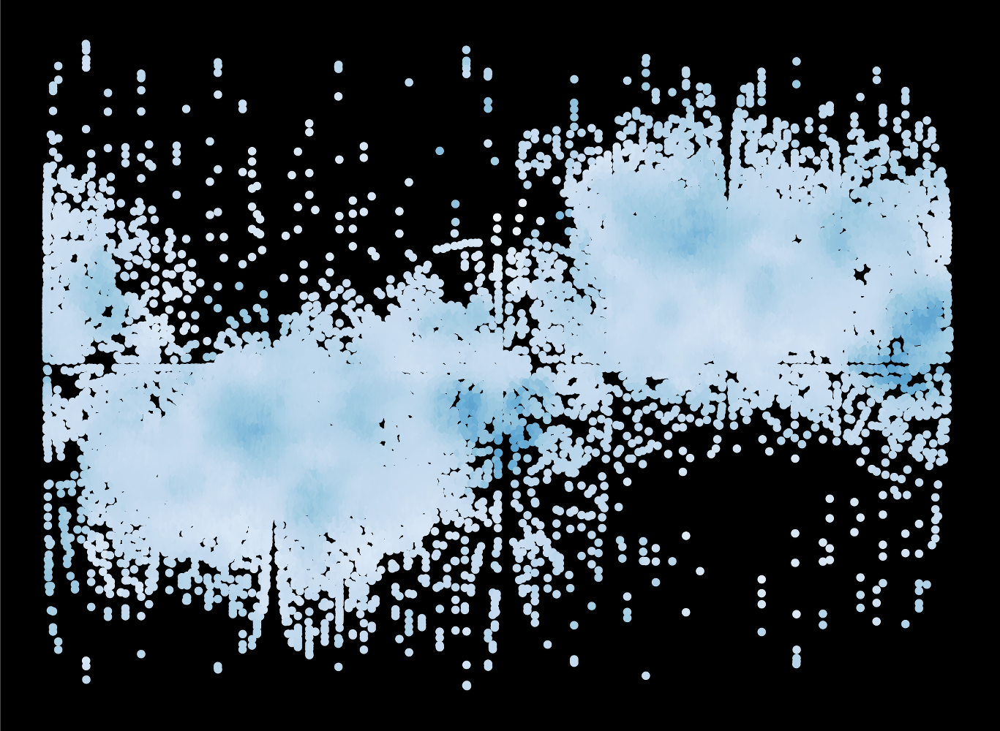

Introduction
 Structuprint is a software tool for two-dimensional representation of protein structures' surfaces, capable of generating animations or still images.{kind=link}
Its main purpose is the visualization of the distribution of physicochemical descriptors on the exposed residues of a protein. Beyond this, it can be used for various structural comparisons, e.g. of evolutionarily related proteins.
For more information, see the user documentation and the codebook of default pre-calculated properties.
Supported Operating Systems
Available features:| Command Line Interface |  |
|
|
| Graphical User Interface | |
 |
|
| Parallelism | |
|
|
| GNU/Linux | |
| Ubuntu 14.04 Debian 8 | 32-bit (38.2 MB), 64-bit (38.7 MB) |
| Fedora 22 | 32-bit (41.5 MB), 64-bit (41.6 MB) |
| CentOS 71 | 64-bit (42.6 MB) |
| openSUSE 13.2 | 32-bit (41.1 MB), 64-bit (41.3 MB) |
|
Windows
|
32-bit installer (71.5 MB) |
|
OS X
|
installer package (94.3 MB) |
epel-release package must be already
installed before installing Structuprint.
Other Systems
For all other systems, you will need to manually install Structuprint from the source code, along with all of its dependencies. See the documentation for more details.| Source code | tarball (3.9 MB) |
Authors
Dimitrios - Georgios Kontopoulos, Dimitrios Vlachakis, Georgia Tsiliki, and Sofia Kossida
License
This program is free software: you can redistribute it and/or modify it under the terms of the GNU General Public License as published by the Free Software Foundation, either version 3 of the License, or (at your option) any later version.
This program is distributed in the hope that it will be useful, but WITHOUT ANY WARRANTY; without even the implied warranty of MERCHANTABILITY or FITNESS FOR A PARTICULAR PURPOSE. See the GNU General Public License for more details.